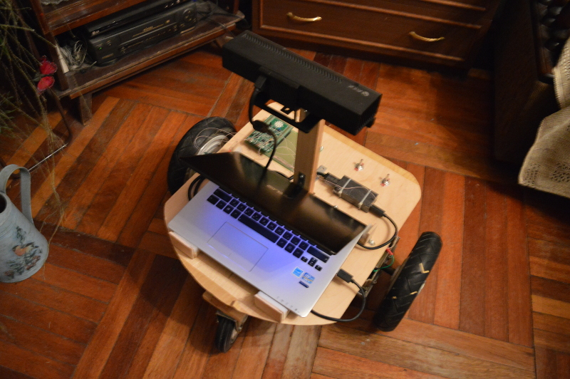
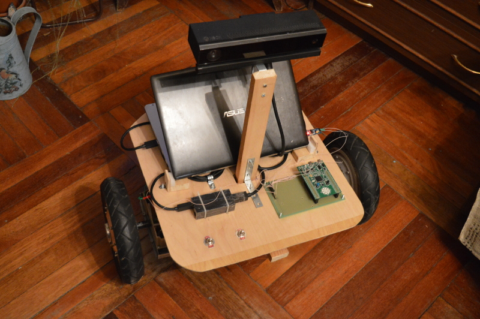
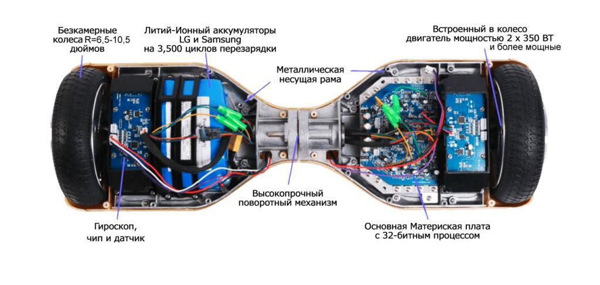
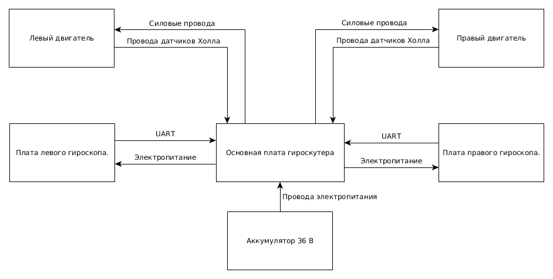
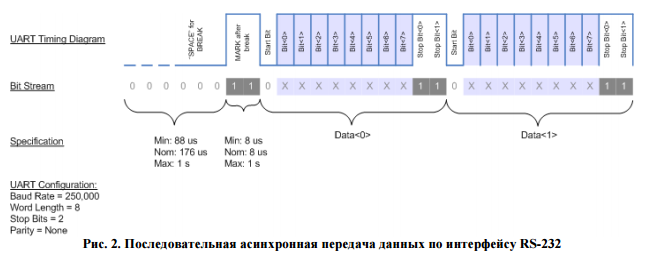
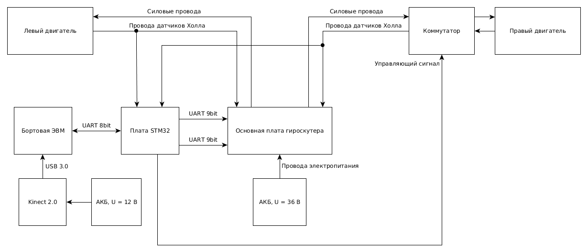
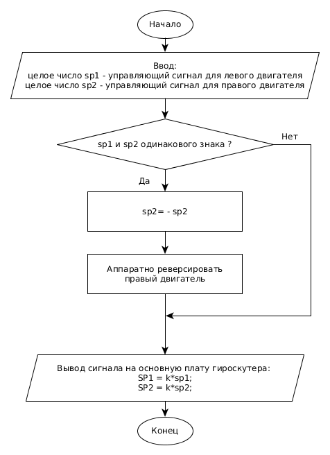
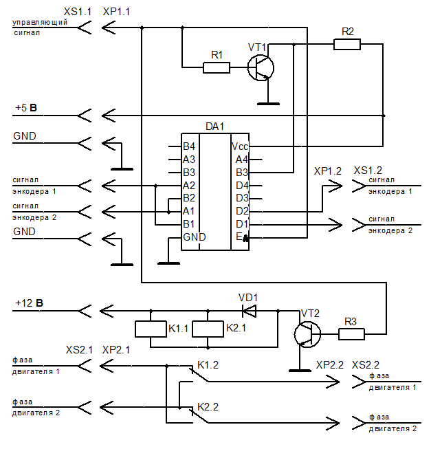

Последняя глава диссертации посвящена исследованию навигационной
системы путем моделирования и с помощью экспериментальных исследований.
Для этого был разработан пакет программ, который включает в себя ПО
навигационной системы, драйвер мобильного робота и среду моделирования;
кроме того, для проведения экспериментов был изготовлен действующий
макет мобильного робота.
В навигационной системе реализованы алгоритмы, которые подробно
рассмотрены в предыдущих главах настоящей диссертационной работы.
Драйвер мобильного робота служит для получения данных от лазерного
дальномера и выдачи сигналов управления на приводной уровень
мобильного робота. Среда моделирования предназначена для
отладки ПО навигационной системы и исследования алгоритмов навигации
мобильного робота. Эксперимент позволил подтвердить работоспособность
каждого алгоритма навигации мобильного робота и системы в целом. Для
этого был разработан макет мобильного робота,
однако для повышения достоверности результатов, было проведено несколько
экспериментов на различных мобильных роботах.
Робот представляет собой трехколесную платформу собственной разработки, основой платформы является гироскутер “Smartbalance 10”. Два колеса ведущие, третье колесо ведомое (см. рисунки 15, 16). Характеристики платформы приведены в таблице 1.

Рисунок 15 – Внешний вид робототехнической платформы сзади

Рисунок 16 – Внешний вид робототехнической платформы спереди
Платформа оснащена бортовым аккумулятором напряжением 36 В для питания двух электродвигателей, а также аккумулятором 12 В для питания времепролетной камеры Kinect 2.0.
Таблица 1—Характеристики платформы собственной разработки
|
Габаритные размеры |
600 x 600 x 400 мм |
|
Масса |
14 кг |
|
Максимальная скорость перемещения |
2 м/c |
|
Время автономной работы |
4 ч |
|
Грузоподъемность |
15 кг |
Робот представляет собой трехколесную платформу собственной разработки, основой платформы является гироскутер "Smartbalance 10". Два колеса гироскутера являются ведущими
На гироскутере установлена рама, разработанная для крепления третьего ведомого колеса, аккумулятора, а также профильной панели. На панели крепятся бортовая ЭВМ, стойка с времепролетной камерой, контроллер двигателей, переходник для питания камеры.
Непосредственно на гироскутере установлена электронная плата собственной разработки - коммутатор. Коммутатор коммутирует сигнальные и силовые провода.
Предварительно был проведен анализ работы гироскутера.
На рис. представлен общий вид гироскутера.

На рис. представлена общая структурная схема устройства гироскутера.

Для того чтобы иметь возможность управлять гироскутером, с помощью логического анализатора был проанализирован протокол обмена данными между платами гироскопов и основной платой гироскутера.
В результате протокол был идентифицирован, он представляет собой UART RS-232, 9 бит, 1 стоп бит.
Протокол(интерфейс) UART (Universal asynchronous receiver/transmitter) или УАПП (универсальный асинхронный приемопередатчик).
Данные передаются пакетами по 9 бит.
В таблице представлены характеристики протокола.
Диаграмма протокола представлена на рис. (заменить рис. заглушку)

Каждые 300 мс циклически повторяется следующая последовательность пакетов:
Угол наклона платы гироскопа прямопропорционален скважности ШИМ (Широтно-импульсная модуляция) сигнала, подающегося на обмотки электродвигателя, а следовательно угол наклона прямопропорционален и скорости вращения двигателя.
Угол наклона задается 18-битным целым числом.
Изменение угла наклоны платы, показано на рис.
При анализе работы гироскутера замечены особенности управления, и выделены два режима работы:
1. При задании угла наклона одного знака с обоих плат гироскопов, скорость двигателей достигает пропорциональной углу наклона, после чего через несколько секунд двигатели начинают ускоряться до максимально возможной скорости. Если угол наклона сохраняется то, скорость двигателей увеличивается чтобы компенсировать, наклон человека, управляющего гироскутером или чтобы увеличить скорость движения вперед.
2. При задании угла наклона разного знака, скорость каждого из двигателей достигает скорости, пропорциональной углу наклона и остается неизменной.
Проведенный анализ работы гироскутера показал, что стабильное управление гироскутером с помощью задания угла наклона, возможно только при втором режиме работы, когда углы наклона плат гироскопов имеют разные знаки и двигатели вращаются в разные стороны.
Возникает проблема управления гироскутером при движении вперед и назад.
Платы гироскопов были удалены. Вместо них для подачи команд управления на основную плату гироскутера и имитирования сигналов с плат гироскопов была установлена плата с микроконтроллером STM32, соединенная с бортовой ЭВМ по интерфейсу UART RS-232 8 bit.
Для решения проблемы управления гироскутером при движении вперед и назад разработана электронная плата - коммутатор, аппаратно меняющая(реверсирующая) направление вращения правого двигателя по внешнему сигналу. Это достигается переключением фаз одного из двигателей, а также переключением сигналов с датчиков Холла, установленных на двигателе. Что позволяет задавать движение вперед и назад из второго режима работы гироскутера.
Здесь и далее, при управлении имитируемый угол наклона платы гироскопа считается управляющим воздействием, пропорциональным скорости соответствующего двигателя.
Общая структурная схема робота после модификаций имеет вид, представленный на рис.
Схема алгоритма работы программы управления двигателями, представлена на рис. .

Электрическая принципиальная схема коммутатора, реверсирующего правый двигатель по внешнему управляющему сигналу, представлена на рис.
Внешний вид платы коммутатора представлен на рис. (вставить фото) .
Для передачи команд управления с бортовой ЭВМ на плату управления двигателями робота разработан протокол. Протокол использует интерфейс UART RS-232.
| Бодрейт | 9600 |
| Количество информации в одном пакете | 8 бит |
Команды управления для моторов кодируется однобайтовым числом 0 - 255.
Диапазон изменения скорости для левого и правого моторов: от -7 до +7.
Для левого мотора используются 4 старших разряда числа, для правого мотора - 4 младших разряда числа.
Рассмотрим 4 старших разряда для левого мотора:
1111 - представление в двоичной системе счисления.
Самый старший бит задает направление вращения колеса, 1 - вперед, 0 - назад.
При вращении вперед скорость задается остальными тремя битами, двоичным числом от 001 до 111, т.е. 7 скоростей вперед. 001 - самая медленная, 111 - самая быстрая.
Для задания положительной скорости вращения назад скорость задается, двоичным числом от 111 до 001 , т.е. 7 скоростей назад. 111 - самая медленная, 001 - самая быстрая.
Тоже самое для второго мотора.
Пример принятого байта:
1000 1000 - оба колеса не двигаются.
1111 1111 - оба колеса вперед, с максимальной скоростью.
0111 0111 - оба колеса назад, с минимальной скоростью.
1001 0111 - левое колесо вперед с минимальной скоростью, правое назад с минимальной скоростью.
0110 1101 - левое колесо назад со скоростю 2, правое колесо вперед со скоростью 5.
Управляющая команда 0000 0000 - инвертировать сигнал разрешения исполнения команд.
Комбинациии 10000000 и 00001000 - не определены и игнорируются.Мобильная платформа оснащена бортовой ЭВМ для управления и обработки
информации с времепролетной камеры. Бортовая ЭВМ представляет собой
ноутбук модели ASUS S300CA, внешний вид которого представлен на рис.
Выбор осуществлялся из необходимости размещения бортовой ЭВМ на
мобильной платформе и мощности процессора установленного в ЭВМ, исходя
из требований для использования реализации алгоритма SLAM.
В ЭВМ установлен процессор Intel Core i7, 4 Гб оперативной памяти и
500Гб постоянной памяти.
Система технического зрения.
В качестве времепролетной (TOF) в задании на НИР была дана камера
Microsoft Kinect 2.0, обладающая наибольшей коммерческой доступностью и
простотой использования относительно других TOF-видеокамер.
Характеристики Microsoft Kinect 2.0 приведены в таблице 2.
Microsoft Kinect 2.0 работает по принципу «range gated images»[]. В
начальный момент времени включается освещение сцены инфракрасной
подсветкой. Затвор инфракрасного приемника закрывается в момент времени
t. Тогда объекты, расположенные дальше, чем t/(2c), где с – скорость
света, не будут видны на камере . Свет не успевает отразиться от них до
закрытия затвора. Точка, расположенная вплотную к камере будет
освещаться всё время экспозиции t и иметь яркость I. Следовательно,
любая точка экспозиции будет иметь яркость от 0 до I, и эта яркость
будет репрезентацией расстояния до точки. Чем ярче точка – тем ближе
объект. Для увеличения точности и дальности действия в Kinect 2.0
используется последовательность вспышек с разным временем срабатывания
затвора приемника[].
В качестве времепролетной (TOF) в задании на НИР была дана камера
Microsoft Kinect 2.0, обладающая наибольшей коммерческой доступностью и
простотой использования относительно других TOF-видеокамер.
Характеристики Microsoft Kinect 2.0 приведены в таблице 2.
Microsoft Kinect 2.0 работает по принципу «range gated images»[]. В
начальный момент времени включается освещение сцены инфракрасной
подсветкой. Затвор ифракрасного приемника закрывается в момент времени
t. Тогда объекты, расположенные дальше, чем t/(2c), где с – скорость
света, не будут видны на камере . Свет не успевает отразиться от них до
закрытия затвора. Точка, расположенная вплотную к камере будет
освещаться всё время экспозиции t и иметь яркость I. Следовательно,
любая точка экспозиции будет иметь яркость от 0 до I, и эта яркость
будет репрезентацией расстояния до точки. Чем ярче точка – тем ближе
объект. Для увеличения точности и дальности действия в Kinect 2.0
используется последовательность вспышек с разным временем срабатывания
затвора приемника[].
fdfd
Существуют
библиотеки
и
программные
пакеты,
помогающие
разработчику сэкономить силы и время при разработке программного
обеспечения (ПО) для робота. К ПО для разработки робототехнических
систем
предъявляются следующие требования:
ПО должна позволять разработчику создавать для решения задачи
вспомогательные модули, которые могут быть тесно связаны с другими
модулями, внешними библиотеками и т. д. При этом процесс создания
программы должен быть максимально упрощен, чтобы заниматься
решением поставленной задачи, а не создания своего собственного
менеджера пакетов.
Так как в ходе работы робототехнической системы, на одной машине
может
быть
запущено
более
десятка
тесно
взаимодействующих
процессов, ПО должна взять на свои плечи заботу о контроле этого
взаимодействия, максимально упростив жизнь разработчику.
Реализации алгоритмов. Сложные системы могут выполнять множество
функций, например: определение координат ПА, создание карты
помещения
на
основе
данных
датчиков,
автономная
навигация,
планирование и т. д. Если реализация алгоритмов не является основной
целью, то лучше воспользоваться готовыми, максимально совместимыми
решениями.
В силу перечисленных выше причин, было решено использовать ПО ROS
(Robot Operating System), уже не раз упомянутое до этого. Далее будет
рассмотрены основные принципы работы этого ПО.
4.1. Robotic Operating System.
ROS – это фреймворк для программирования роботов, предоставляющий
функциональность для распределённой работы. ROS был первоначально
23разработан в 2007 году под названием switchyard в Лаборатории
Искусственного
Интеллекта Стэнфордского Университета. В 2008 году развитие продолжается
в
Willow Garage, научно-исследовательском институте/инкубаторе
робототехники,
совместно с более чем двадцатью сотрудничающими институтами.
ROS обеспечивает стандартные службы операционной системы, такие как:
аппаратную абстракцию, низкоуровневый контроль устройств, реализацию
часто используемых функций, передачу сообщений между процессами, и
управление пакетами. ROS основан на архитектуре графов, где обработка
данных происходит в узлах, которые могут получать и передавать сообщения
между собой. Библиотека ориентирована на Unix-подобные (Ubuntu) системы,
однако сейчас активно разрабатывается поддержка платформ Windows и
MacOS.
Основные достоинства ROS :
архитектура операционной системы;
набор поддерживаемых сообществом пакетов (ros-pkg);
бесплатен для использования в коммерческих и исследовательских
проектах.
4.2. Понимание файловой системы ROS. Концепция графов.
Основной единицей файловой системы является пакет (package). Каждый
пакет содержит библиотеки, исполняемые файлы, скрипты, и т. д. Для
каждого
пакета существует свой манифест (manifest), в котором есть краткое
описание
пакета, зависимости между пакетами, и различная мета информация, такая
как
версия пакета, лицензия и т.д.
Введем несколько понятий:
Узел (Node) — некоторый исполняемый процесс, который использует ROS
для связи с другими узлами.
24
Сообщения (Messages) – специальный тип данных ROS используемый
узлом для публикации или подписки на топики.
Топики (Topics) — узлы могут подписываться на топик, чтобы получать
сообщения, или публиковать в топик, чтобы отправлять сообщения.
Мастер (Master) — имя сервиса для ROS.
rosout – эквивалент stdout/srderr.
В ROS существует множество инструментов, помогающих программисту в
процессе разработки и обработки ошибок, можно легко проследить как
взаимодействуют между собой различные процессы внутри ROS. Пакет Rviz
является частью ROS, а Gazebo — ROS совместим.
Рассмотрим пакет tf, который помогает разработчику упростить работу с
преобразованием
координат.
описывается с помощью
Конфигурация
робототехнической
системы
систем координат, связанных с различными частями
робота. tf наблюдает за положением систем координат, и позволяет
определить в
любой момент времени (от некоторого t=0 и до текущего момента времени)
положение и ориентацию одной системы координат относительно другой. Для
этого некоторый узел подписывается на (публикует в) топик tf, таким
образом
получая необходимую информацию.
5. Разработка контроллера 4-колесного мобильного робота.
Для 4-колесного робота необходимо разработать контроллер, позволяющий
с помощью определенного оборудования (джойстик, клавиатура) передавать
ПА
команды. В ограничениях нашей за
4.2.2 Реализация алгоритма планирования пути
Предложенный АМПП реализован на языке C++ с использованием средств,
входящих в состав программного пакета ROS. На рисунке 8 приведена
упрощённая блок-схема узлов ROS разработанной системы.
На рисунке представлен результат работы алгоритма RTAB-Map
Не всегда возможно найти реальное оборудование для исследований. Это
связано в первую очередь с ценами ПА роботов, датчиков, например, цена
высокоточный системы лазерных дальномера может доходить до запредельных
цифр. Так же робототехнические системы являются тонко-настраиваемыми, и
любая поломка может надолго отложить реальные исследования. Поэтому
хорошее программное обеспечение, позволяющее визуализировать реальные
робототехнические системы, позволяют исследователям экономить денежные и
временные ресурсы. Далее, в работе проведен обзор существующих решений
для визуализации роботов и рабочего окружения (РО).
4.3.1. Средства визуализации роботов и рабочей среды.
В качестве средств визуализации робота и РО были использованы пакеты Gazebo и Rviz, которые являются частью пакета Robot Operating System, использующийся в данной работе.
Gazebo позволяет моделировать физические свойства мобильного робота и РО, показания различных датчиков и т. д. Rviz позволяет создавать виртуальную модель робота и визуализировать данные датчиков, карты, маршруты.
3.2. Ограничения рабочего окружения.
В качестве основного датчика был выбран 2D лазерный дальномер, что
накладывает некоторые ограничения на рабочую среду робота:
поверхность рабочей среды является плоскостью;
луч лазера параллелен поверхности среды, датчик неподвижно закреплен
на роботе;
высота препятствий превосходят высоту, на которой находиться лазерный
дальномер;
поверхности объектов среды не являются зеркальными и прозрачными
поверхностями, гарантируется надежность измерения датчика.
Введенные ограничения позволяют свести нашу задачу, к задачи
автономной навигации на плоскости. Упомянутый выше Robotic Operating
System имеет мощные программные средства, позволяющие решить эту задачу.
3.3. Виртуальная модель робота.
Была создана виртуальная модель 4-колесного робота с параметрами
указанными в таблице 3.
После создания контроллера ПА и создания модуля оценки одометрии, был
создан модуль автономной навигации мобильного робота. В этой работе
использованы возможности ROS, которая предлагает решение этой задачи с
помощью пакета move_base ([19]). Далее в работе рассмотрены свойства и
организация этого пакеты управления.
286.1. Пакет move_base.
Рис 7. Схема конфигурации пакета move_base.
Рассмотрим компоненты этой схемы:
Карта (map_server). Узел map_server подает на вход некоторую карту РО,
эта карта будет использована для построения global_costmap – глобальной
карты препятствий, по которой затем алгоритм будет решать в каких
точках стоит прокладывать маршрут.
Одометрия (odometry source). Необходимо, чтобы через tf модуль мог
достать преобразование odom → base_link, где base_link — система
координат связанная с роботом, а odom — система координат, в которой
происходит движение ПА.
Координаты мобильного робота (amcl, sensor transforms). Необходимо,
чтобы с помощью некоторого алгоритма (например, адаптивного метода
Монте-Карло — amcl, [29],[30]), который через tf предоставляет группу
последовательных преобразований координат: map → odom → base_link.
В этой работе, чтобы уменьшить вычислительные затраты, был
использован пакет fake_localization, который предоставляет те же
29преобразования в tf, что и amcl, но в отличии от последнего, он
использует данные о положении робота на карте из симуляции, и как
следствие экономит вычислительные ресурсы.
Данные датчиков (sensor sources), которые будут использованы для
построения local_costmap, которые будут использованы программой для
обеспечения движения ПА по маршруту.
global_planner.
который
Существует
используется
интерфейс
планировщиками
nav_core::BaseGlobalPlanner,
пути.
Один
из
таких
планировщиков — navfn. Он использует алгоритм Дейкстры для расчета
минимального пути из начальной точки в конечную.
local_planner.
nav_core::BaseLocalPlanner
предоставляет
интерфейс
используемый локальными планировщиками. base_local_planner — один
из плагинов использующих этот интерфейс. Этот пакет предоставляет
реализации методов TRA (Trajectory Rollout approach) и DWA(Dynamic
Window approach) для локальной навигации робота на плоскости.
Принимая на вход маршрут и карту препятствий (costmap), на выходе
выдает скорость, которая затем передается контроллеру робота.
6.2. Поведение робота.
Рис 8. Схема поведения робота при восстановлении.
При
вызове
move_base
будет
пытаться
30
обеспечить
достижениепоставленной пользователем цели в пределах некоторой
установленной
пользователем
погрешности.
В
конечном
итоге,
move_base
сообщит
пользователю о том, что цель достигнута или же поставленная цель
недостижима. Если робот застревает, то модуль переходит в режим
восстановления. По умолчанию, move_base выполнит следующие действия,
чтобы восстановить движение робота:
1. препятствия за пределами заданной пользователем области будут удалены
с карты робота; ,
2. если возможно, робот будет выполнять вращение на месте, чтобы
очистить пространство перед ним;
3. если это тоже не удается, робот полностью очистит область карты, в
которой робот может вращаться;
4. после этого он продолжит свое вращение.
Если ничего из вышеуказанного не поможет, цель будет считаться
недостижимой и её выполнение будет прервано. Пользоват